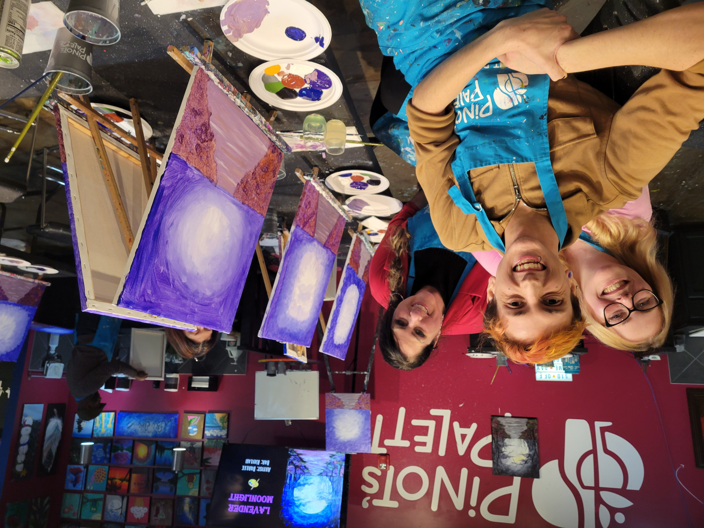

Kevin, You taught me that sometimes the “abnormal” way of teaching is actually the most effective. Your leadership class carved out space in my heart. As you may remember, I work at a nonprofit for at-risk youth. Your class gave me the confidence to lean into my own leadership style—one that's more flexible, more intuitive, more human. You showed me that being hands-off while still being present is a powerful approach. Growing up, I didn't have the most stable or supportive environment. Social situations were hard, and I often felt like I didn't belong anywhere. Your class gave me a safe place to experiment, to open up, and to see people (and myself) in a new light. Thank you for creating a space where I could try, fail, and grow.
